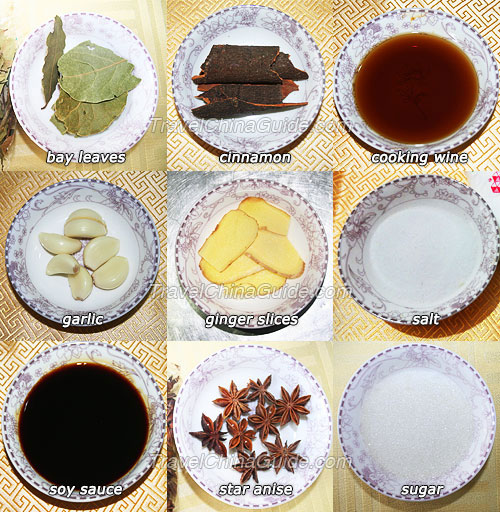
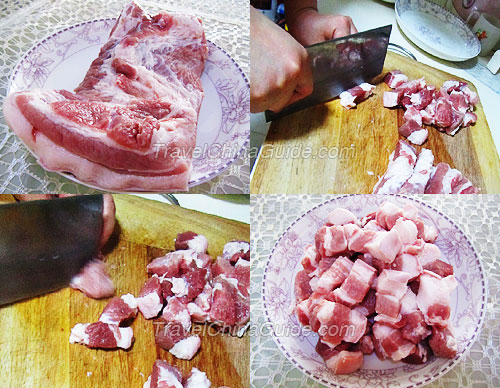
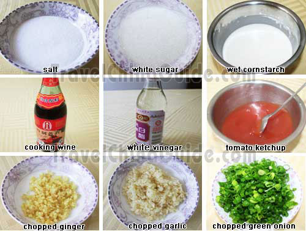

Stewed Pork with Brown Sauce
 Chinese name:(hei hú jiao niú liu)
Chinese name:(hei hú jiao niú liu)Style: Guangdong Cuisine Characteristics: Black pepper beef looks dark in color and tastes strong. The beef in it tastes smooth and tender after frying in the oil; the onion in the dish is fragrant and crispy, while the green pepper makes it more fresh and eye-catching. One of the local characteristic dishes of Guangdong Cuisine, black pepper beef is a good choice for people who like spicy food. Black pepper is a spicy and hot seasoning, which can help people to withstand the cold and the dampness. Besides beef, Chinese people also cook black pepper chicken and black pepper pork. |
|

Ingredients: Streaky pork (pork belly) with rind, 500 g Bay leaves cinnamon cooking wine garlic ginger slices salt soy sauce star anise sugar Note: the reddish color of this dish is mainly from sugar; soy sauce is just used to season, and too much soy sauce will give the dish a darker color. If you want to give the dish a brighter color, you can use rock candy, instead of sugar. The amount of the seasonings should be adjusted to suit one's personal taste.  Preparation: Clean the pork with water. Then cut it into 2.5 cm cubes (about 1 inch) and put them onto a plate. Each piece of pork should contain both fat and lean meat. You may cut them into larger pieces if you prefer. Methods: Step 1: Place a wok over high heat until it gets hot. Add some cooking oil. When the oil is hot add the pork. Stir-fry the pork cubes until their surface is brown. Stir-fry the Pork Step 2: Push the pork to one side of the wok and leave the oil in the center. Add some sugar or rock candy and stir it until the syrup bubbles and turns brown. Then mix the pork and the syrup to color the pork cubes. Fry the Sugar to Color the Pork Step 3: Add the seasonings in turn: 4- 5 pieces of bay leaves, 2 -3 pieces of cinnamon, 2 spoons of cooking wine, 5 slices of ginger, one spoon of soy sauce, 7 - 8 pieces of star anise, and some salt (according to personal taste). Stir-fry them and add enough boiled water to just cover all of the pork cubes. Add Seasonings and Water Step 4: Bring to a boil and then turn down the heat and cover the wok. Stew the pork for about 1 hour. The meat will taste better if you take it out of the wok and stew it in an earthen pot. Simmer the Meat over Low Heat Step 5: Add some garlic. You can also add potato or carrot and stew them for another 30 minutes. Then put the meat back to the wok and cook over high heat until all liquids are absorbed. Add Vegetables |
Sweet and Sour Pork Fillet
 Chinese name:(táng cù li ji)
Chinese name:(táng cù li ji)Style: Zhejiang Cuisine Characteristics: it is reddish in color, sweet and just a little sour, crisp on the outside and tender on the inside. One of the well-known dishes in the Zhejiang Cuisine, this dish is popular among all the people regardless of age or gender. Everyone loves its special taste of sweet mixed with sour, its freshness, its crisp outside and its tender inside. Its raw materials are simple and making it is not difficult, either. However, you need a few tips to cook it well. First, the key to a crisp outside and a tender inside is that the lean pork strips must be fried twice. Second, the proportion of salt to white sugar is critical. It must be perfected over time according to one’s personal taste. Third, when stir-frying the cutlet in the sauce mix, the movement must be quick. |
|

Ingredient: Lean pork, 300 g salt white sugar white vinegar tomato ketchup cooking wine wet cornstarch green onion garlic ginger Note: the amount of the seasonings listed above can be appropriately used according to one's personal taste. Meanwhile, to make a plate of delicious sweet and sour pork fillet, the preparation of the sauce is very important. Take some tomato ketchup out of the tomato ketchup bottle and put it into a small bowl. Add in some salt, white sugar and white vinegar, and stir well with a teaspoon until the ingredients are mixed together. Meanwhile, prepare the wet cornstarch for the thickening later.  Methods:
Methods:Step 1: Place a wok over high heat until hot. Add some cooking oil, and add in the processed lean pork strips one by one with chopsticks. Turn off the fire and remove them when they look yellowish-white and put them in a colander quickly. Add the fried strips back in to be fired again when the temperature of the oil in the wok is heated back up to 70 centigrade (158 Fahrenheit). The strips are fried well until they turn golden. Then, remove them from the wok. Frying the Pork Fillet Straps Step 2: Leave some cooking oil in the wok, swirling to coat the sides. Add in the chopped garlic and ginger and stir-fry over high heat for about 20 seconds. Then, add in the tomato ketchup mixture and the wet cornstarch and stir-fry for 10 seconds. And in the chopped green onion lastly and stir-fry them together until they smell fragrant, about 20 seconds. Stir-frying the Seasonings Step 3: Add in the fried lean pork and stir-fry for about 2-3 minutes over high heat until the seasoning sauce coats the outside skin of the fried strips. Stir-frying the Fried Pork Fillet Straps Step 4: Now, turn off the fire, find a fine porcelain plate, and pick the delicious sweet and sour pork fillet out of the wok. |
Chinese Pork Tenderloin
 Ingredients:
Ingredients:(1 1/2 pound) pork tenderloins, trimmed 2 tablespoons light soy sauce 2 tablespoons hoisin sauce 1 tablespoon sherry 1 tablespoon black bean sauce 1 1/2 teaspoons minced fresh ginger root 1 1/2 teaspoons packed brown sugar 1 clove garlic 1/2 teaspoon sesame oil 1 pinch Chinese five-spice powder Directions:
|